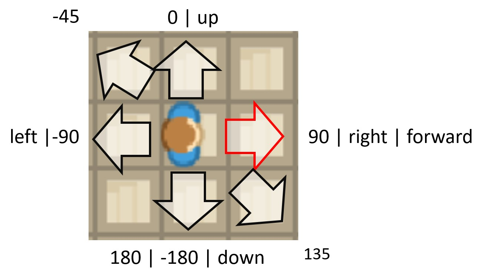
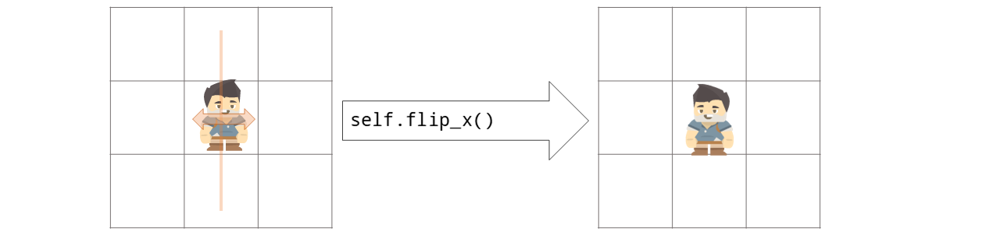
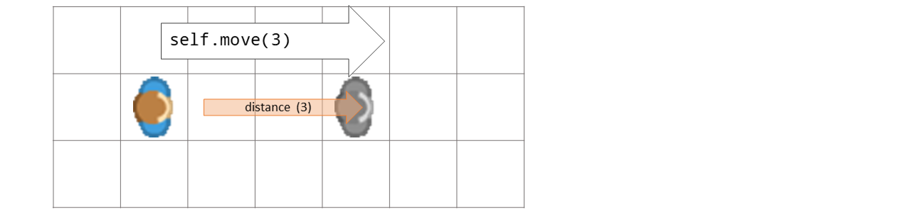
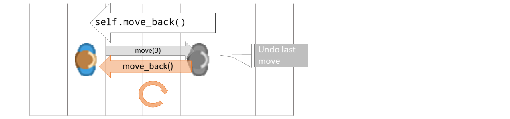
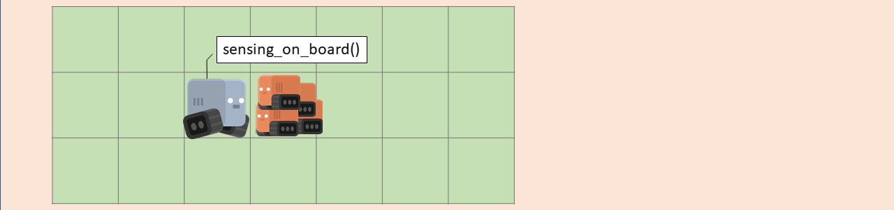

Token¶
- class miniworldmaker.tokens.token.Token(position=None)[source]¶
Tokens are objects on your board. Tokens can move around the board and have sensors to detect other tokens.
The appearance of a token is determined by its Costume.
These are the Token Types you can use:
Token: Base class for all Kinds of Tokens
TextToken: A TextToken
NumberToken: A NumberToken
Rectangle: A Rectangle
Line: A Line
Circle: A Circle
Ellipse: A Ellipse
Examples
Creating a token:
board = miniworldmaker.PixelBoard() board.size = (800,300) my_token = miniworldmaker.Token(position=(0, 0))
Creating a token Class:
class MyToken(miniworldmaker.Token): def on_setup(self): self.add_costume("images/2.png") my_token = MyToken(position = (40,130))
Creating a Circle from Center at mouse position
circle = miniworldmaker.Circle(self.get_mouse_position(), 80, 1) circle.center = circle.position
- Parameters
position – The topleft position of the token as tuple,. e.g. (200,200)
- add_costume(source=(255, 255, 0, 0))[source]¶
Adds a new costume to token. The costume can be switched with self.switch_costume(index)
- Parameters
path – Path to the first image of new costume
- Returns
The new costume.
- Return type
- property border¶
The border-size of token.
The value is 0, if token has no border
- Returns
int
- Return type
_type_
- property border_color¶
border color of token
- bounce_from_border(borders)[source]¶
Bounces the actor from a border.
- Parameters
borders – A list of borders as strings e.g. [“left”, “right”]
Returns: The token
- Return type
- property center_x¶
x-value of token center-position
- property center_y¶
y-value of token center-position
- property collision_type: str¶
collision_type specifies how collisions should be checked:
default: tile for TiledBoards, ‘mask’ for PixelBoards
tile: Are tokens on the same tile? (only TiledBoard)
rect: Are tokens colliding when checking their bounding - boxes? (Only PixelBoard)
static-rect: Are tokens colliding when checking circle with radius = bounding-box-radius.(Only PixelBoard)
circle: Are tokens colliding when checking circle with radius = bounding-box-radius.(Only PixelBoard)
mask: Are tokens colliding when checkig if their image masks are overlapping.
- Return type
- property color¶
->See fill color
- property direction: int¶
Directions are handled exactly as in the Scratch programming language, see: Scratch Wiki
The default direction is 0°. All tokens are looking “up”
Values for Direction
0° or “up”: up
90° or “right”: Move right
-90° or “left”: Move left
180° or “down”: Move down
“forward”: Current direction
Sets direction of the token.
You can use a integer or a string to describe the direction
- Options
0, “up” - Look up
90, “right”, - Look right
-90, “left”, - Look left
-180, 180, “down” - Look down

Examples
Move in a direction with WASD-Keys
def on_key_down(self, keys): if "W" in keys: self.direction = "up" elif "S" in keys: self.direction = "down" elif "A" in keys: self.direction = "left" elif "D" in keys: self.direction = "right" self.move()
- Return type
- property direction_at_unit_circle: int¶
Gets the direction as value in unit circle (0° right, 90° top, 180° left…
- Return type
- property fill¶
Is token filled with color?
- flip_x()[source]¶
Flips the actor by 180° degrees
- Returns
The new direction
- Return type
Examples
flip a token.
def on_sensing_not_on_board(self): self.move_back() self.flip_x()
- Return type
- classmethod from_center(center_position)[source]¶
Creates a token with center at center_position
- Parameters
center_position – Center of token
- property height¶
The height of the token in pixels
- property image: pygame.Surface¶
The image of the token:
Warning
Warning: You should not directly draw on the image as the image will be reloaded during animations
- Return type
Surface
- property is_flipped: bool¶
If a token is flipped, it is mirrored via the y-axis.
- Returns
True, if token is flipped
Examples
flip a token in Example flipthefish.py
def on_sensing_not_on_board(self): self.move_back() self.flip_x() print(self.is_flipped()) # true
- Return type
- property layer: int¶
Layer property can only be set before the sprite is added to a group, after that it is read only and a sprite’s layer in a group should be set via the group’s change_layer() method.
Overwrites dynamic property from sprite class for speed.
- Return type
- move(distance=0)[source]¶
Moves actor distance steps in current direction
- Parameters
distance – Number of steps to move. If distance = 0, the actor speed will be used.
- Returns
The moved token
Examples
if token is on the board, move forward:
class Robot(Token): def act(self): if self.sensing_on_board(): self.move()
- move_back()[source]¶
“Undo” the last move. Moves the actor to the last position and resets direction.
- Returns
The moved token
Examples
move_back when field is blocked:
def on_sensing_wall(self, wall): self.move_back()
- move_in_direction(direction, distance=1)[source]¶
Moves token distance steps into a direction.

- Options
0, “up” - Look up
90, “right”, - Look right
-90, “left”, - Look left
-180, 180, “down” - Look down
- Parameters
direction – Direction as angle
- Returns
The token itself
- move_to(position)[source]¶
Moves token distance to a specific board_posiition
- Parameters
position – The position to which the actor should move. The position can be a 2-tuple (x, y)
board_position (which will be converted to a) –
- Returns
The token itself
Examples
move to (3, 2) on mouse_click
def on_clicked_left(self, position): self.move_to((3,2))
- next_costume()[source]¶
Switches to the next costume of token
- Parameters
next – If next is True, the next costume will be selected
- Returns
The new costume
- on_clicked_left(position)[source]¶
The mouse is on top of a token and mouse was clicked.
Examples
Registering a on_click event:
token = miniworldmaker.Token((2,2)) @token.register def on_clicked_left(self, position): print("clicked" + str(position))
- Parameters
position (tuple) – Actual mouse position as tuple (x,y)
- Raises
NotImplementedOrRegisteredError – The error is raised when method is not overwritten or registered.
- on_clicked_right(position)[source]¶
The mouse is on top of a token and mouse was clicked.
Examples
Registering a on_click event:
token = miniworldmaker.Token((2,2)) @token.register def on_clicked_right(self, position): print("clicked" + str(position))
- Parameters
position (tuple) – Actual mouse position as tuple (x,y)
- Raises
NotImplementedOrRegisteredError – The error is raised when method is not overwritten or registered.
- on_key_down(key)[source]¶
on_key_down is called one time when a key is pressed down.
Note
Instead of on_key_down you can use on_key_down_letter, e.g. on_key_down_a or on_key_down_w , if you want to handle a on_key_down event for a specific letter.
Examples
Register a key_down event:
token1 = miniworldmaker.Token(position = (2, 2) ) token1.add_costume((100,0,100,100)) @token1.register def on_key_down(self, key): print(key)
Register on_key_down_a event
token1 = miniworldmaker.Token(position = (2, 2) ) token1.add_costume((100,0,100,100)) @token1.register def on_key_down_a(self): print("a")
- Parameters
key (list) – The typed key as list (e.g. [‘A’, ‘a’]) containing both uppercase and lowercase of typed letter.
- Raises
NotImplementedOrRegisteredError – The error is raised when method is not overwritten or registered.
- on_key_pressed(key)[source]¶
on_key_pressed is called when while key is pressed. If you hold the key, on_key_pressed is repeatedly called again and again until the key is released.
Note
Like on_key_down the method can be called in the variant on_key_pressed_[letter] (e.g. on_key_pressed_w(self)).
Examples
Register on_key_pressed event:
token1 = miniworldmaker.Token(position = (2, 2) ) token1.add_costume((100,0,100,100)) @token1.register def on_key_pressed(self, key): print("pressed", key) @token1.register def on_key_pressed_s(self): print("pressed s")
- Parameters
key (list) – The typed key as list (e.g. [‘C’, ‘c’, ‘D’, ‘d’]) containing both uppercase and lowercase of typed letter.
- Raises
NotImplementedOrRegisteredError – The error is raised when method is not overwritten or registered.
- on_message(message)[source]¶
Messages are used to allow objects to communicate with each other.
Send a message:
A token and the board can send a message to all tokens and the board with the command: self.send_message(“message_string”)
Process a message:
If your board or your token should react to messages you can use the event on_message:
Examples
Receive a message
@player.register def on_message(self, message): if message == "Example message": do_something()
- Parameters
message (str) – The message as string
- Raises
NotImplementedOrRegisteredError – The error is raised when method is not overwritten or registered.
- on_mouse_left(position)[source]¶
Method is called when left mouse button was pressed.
- Examples
Register mouse event to board
@board.register def on_mouse_left(self, position): print("left" + str(position)) @board.register def on_mouse_right(self, position): print("right" + str(position)) @board.register def on_mouse_middle(self, position): print("middle" + str(position))
- Parameters
position (tuple) – Actual mouse position as tuple (x,y)
- Raises
NotImplementedOrRegisteredError – The error is raised when method is not overwritten or registered.
- on_mouse_motion(position)[source]¶
on_mouse_motion is called when right mouse moves.
Examples
Register mouse-motion event to board
@board.register def on_mouse_motion(self, position): print("motion" + str(position))
- Parameters
position (tuple) – Actual mouse position as tuple (x,y)
- Raises
NotImplementedOrRegisteredError – The error is raised when method is not overwritten or registered.
- on_mouse_right(position)[source]¶
on_mouse_right is called when right mouse button was pressed.
Examples
Register mouse event to board
@board.register def on_mouse_right(self, position): print("right" + str(position))
- Parameters
position (tuple) – Actual mouse position as tuple (x,y)
- Raises
NotImplementedOrRegisteredError – The error is raised when method is not overwritten or registered.
- on_sensing_borders(str)[source]¶
on_sensing_border is called, when token is near a border
- Parameters
str (List) – A list of strings with found borders, e.g.: [‘left’, ‘top’]
Examples
Register on_sensing_border_event:
@player.register def on_sensing_borders(self, borders): print("Player 4: Sensing borders:") print("Borders are here!", str(borders))
- Raises
NotImplementedOrRegisteredError – The error is raised when method is not overwritten or registered.
- on_sensing_not_on_board()[source]¶
on_sensing_not_on_board is called, when token is not on board”
Examples
Register on_sensing_not_on_board method:
@player.register def on_sensing_not_on_board(self): print("Warning: I'm not on the board!!!")
- Raises
NotImplementedOrRegisteredError – The error is raised when method is not overwritten or registered.
- on_sensing_on_board()[source]¶
on_sensing_on_board is called, when token is on board”
Examples
Register on_sensing_on_board method:
@player.register def on_sensing_on_board(self): print("Player 3: I'm on the board:")
- Raises
NotImplementedOrRegisteredError – The error is raised when method is not overwritten or registered.
- on_sensing_token(token)[source]¶
on_sensing_token is called, when token is sensing a token on same position
- Parameters
token (Token) – The found token
Examples
Register sensing_token event
@player.register def on_sensing_token(self, token): print("Player 1: Sensing token:") if token == player2: print("Am i sensing player2?" + str(token == player2))
- Raises
NotImplementedOrRegisteredError – The error is raised when method is not overwritten or registered.
- point_in_direction(direction)[source]¶
Token points in given direction.
You can use a integer or a string to describe the direction
- Parameters
string (The direction as integer or) –
- Options
0, “up” - Look up
90, “right”, - Look right
-90, “left”, - Look left
-180, 180, “down” - Look down
Examples
Move in a direction with WASD-Keys
def on_key_down(self, keys): if "W" in keys: self.direction = "up" elif "S" in keys: self.direction = "down" elif "A" in keys: self.direction = "left" elif "D" in keys: self.direction = "right" self.move()
- Return type
- point_towards_position(destination)[source]¶
Token points towards a given position
- Parameters
destination – The position to which the actor should pointing
- Returns
The new direction
Examples
Point towards mouse_position:
def act(self): mouse = self.board.get_mouse_position() if mouse: self.point_towards_position(mouse) self.move()
- Return type
- point_towards_token(other)[source]¶
def s Token points towards another token.
- Parameters
other – The other token
- Returns
The new direction
- Return type
- property position: miniworldmaker.board_positions.board_position.BoardPosition¶
The position of the token as BoardPosition (x, y)
- Return type
- property rect: pygame.Rect¶
The surrounding Rectangle as pygame.Rect. Warning: If the token is rotated, the rect vertices are not the vertices of the token image.
- Return type
Rect
- register(method)[source]¶
This method is used for the @register decorator. It adds a method to an object
- Parameters
method (callable) – The method which should be added to the token
- remove()[source]¶
Removes this token from board
Examples
Removes robots in thecrash.py :
def act(self): self.move() other = self.sensing_token(distance = 0, token_type=Robot) if other: explosion = Explosion(position=self.position) self.remove() other.remove()
- remove_costume(costume=None)[source]¶
Removes a costume from token
- Parameters
index – The index of the new costume. Defaults to -1 (last costume)
- sensing_borders(distance=0)[source]¶
Senses borders

- Parameters
distance – Specifies the distance in front of the actuator to which the sensor reacts.
- Returns
True if border was found.
- Return type
- sensing_bottom_border(distance=0)[source]¶
Senses borders
- Parameters
distance – Specifies the distance in front of the actuator to which the sensor reacts.
- Returns
True if border was found.
- Return type
- sensing_colors(colors, distance)[source]¶
Senses colors in board-background at token-position
- Parameters
colors – colors as tuple
distance – Specifies the distance in front of the actuator to which the sensor reacts.
- Returns
All colors found by Sensor
- Return type
- sensing_left_border(distance=0)[source]¶
Senses borders
- Parameters
distance – Specifies the distance in front of the actuator to which the sensor reacts.
- Returns
True if border was found.
- Return type
- sensing_on_board(distance=0)[source]¶
Is the token on board if it is moving distance steps forward?
- Parameters
distance – Specifies the distance in front of the actuator to which the sensor reacts.
- Returns
True if token is on board
- Return type
- sensing_point(board_position)[source]¶
Is the token colliding with a specific (global) point?
- Returns
True if point is below token
- sensing_right_border(distance=0)[source]¶
Senses borders
- Parameters
distance – Specifies the distance in front of the actuator to which the sensor reacts.
- Returns
True if border was found.
- Return type
- sensing_token(token_filter=None, distance=0, collision_type='default')[source]¶
Senses if tokens are on tokens position. Returns the first found token.

- Parameters
token_filter – filter by token type or by token instance
distance – Specifies the distance in front of the actuator to which the sensor reacts.
collision_type – The type of collision which should be checked:
- Returns
First token found by Sensor
Examples
Sensing a fireplace in rpg.py:
fireplace = self.player.sensing_token(Fireplace) if fireplace: self.console.newline("Du zündest die Feuerstelle an.") self.fireplace.burn()
- sensing_tokens(token_filter=None, distance=0, collision_type='default')[source]¶
Senses if tokens are on tokens position. Returns a list of tokens.

- Parameters
token_filter – filter by token type. Enter a class_name of tokens to look for here
distance – Specifies the distance in front of the actuator to which the sensor reacts.
collision_type – The type of collision which should be checked:
- Returns
All tokens found by Sensor
- Return type
- sensing_top_border(distance=0)[source]¶
Senses borders
- Parameters
distance – Specifies the distance in front of the actuator to which the sensor reacts.
- Returns
True if border was found.
- Return type
- property static¶
Should token react to events? You can turn this option off for additional performance boost.
- property stroke_color¶
see border color
- switch_costume(costume)[source]¶
Switches the costume of token
- Parameters
next – If next is True, the next costume will be selected
- Returns
The new costume
- Return type
- property topleft_x¶
x-value of token topleft-position
- property topleft_y¶
x-value of token topleft-position
- turn_left(degrees=90)[source]¶
Turns actor by degrees degrees left

- Options:
You can set the value token.is_rotatable = False if you don’t want the token to be rotated.
- Parameters
degrees – degrees in left direction
- Returns
New direction
- Return type
- turn_right(degrees=90)[source]¶
Turns token by degrees degrees right

- Options:
You can set the value token.is_rotatable = False if you don’t want the token to be rotated.
- Parameters
degrees – degrees in left direction
- Returns
New direction
- property width¶
The width of the token in pixels
{kind=link}